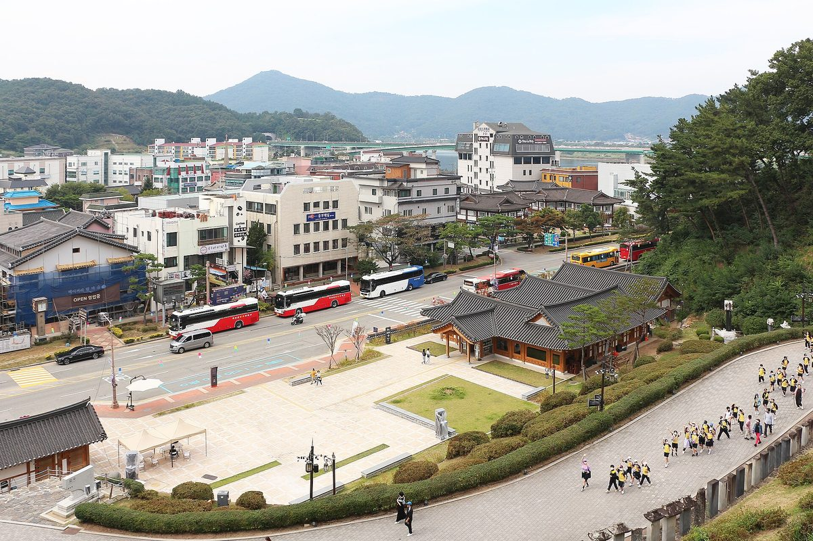

공주시 공영주차장 태양광, 공개경쟁 없이 사업자 내정했나…행정사무감사서 절차 논란

사업 대상지 21곳·10곳·7곳 문서마다 달라, 시 답변서도 임대형이 직영보다 수익성 낮을 수 있다고 적어…교통과장 법에 맞는 기준 마련하겠다
충남 공주시가 추진하는 공영주차장 태양광 사업을 두고 사업자 선정 절차가 적정했는지 논란이 일고 있다. 박미옥 공주시의원(국민의힘·다선거구)은 21일 교통과 행정사무감사에서 내부 결재 문서를 근거로, 시가 지난 2월 공모나 공개경쟁 입찰 없이 제안서 한 건만 검토해 민간업체를 사업자로 내정했다고 주장했다. 7월 8일 작성된 내부 계획서에는 계약을 먼저 맺은 뒤 주차장 관리부서·임차인과 협의해 설치 여부와 범위, 방법을 정한다고 적혀 있었고, 사업 대상지도 7월 계획 21곳, 8월 시의회 동의안 10곳, 감사 답변서의 설치 의무 대상 17곳 중 7곳 설치(10곳은 면제·연장)로 문서마다 달랐다. 교통과 답변서에도 부지 임대형 민간발전이 직영보다 수익성이 낮을 수 있고, 계약 기간에는 주차장 개선이나 용도 변경에 제약이 따른다는 취지의 내용이 담겼다. 박 의원은 사업자 선정 전에 시의회 동의를 받지 않아 공주시 에너지 기본 조례 제8조의2를 어겼을 소지가 있다며 시의 직접 설치나 공개입찰을 요구했다. 이진황 공주시 교통과장은 "수의계약이든 입찰이든 법에 맞는 기준을 마련해 합당하게 선정하겠다"고 답했다.
시민에너지 관점
공영주차장 태양광 의무화로 전국 지자체가 같은 출발선에 섰는데, 공주시는 대상지도 정하지 않은 채 사업자부터 정했다는 의문을 받고 있다. 같은 의무를 받은 김해시는 14곳 가운데 7곳을 특별회계로 직접 투자해 수익을 다시 재정으로 돌리기로 했다. 민간 임대가 초기 비용을 줄인다는 반론도 있지만, 공주시 답변서 스스로 임대형이 직영보다 수익성이 낮을 수 있다고 적었다. 공공 부지를 장기간 내어주는 결정인 만큼 시는 대상지와 수익 구조를 먼저 공개하고, 직영이나 시민 출자 방식과 나란히 견주는 공개 절차부터 밟아야 한다.
출처: 로컬투데이 2026-10-22 박길수 원문 보기
公州市の公営駐車場太陽光、公開競争なしに事業者を内定か…行政事務監査で手続きに疑問
事業対象地は21カ所・10カ所・7カ所と文書ごとに異なり、市の答弁書も賃貸型は直営より収益性が低い可能性を記載…交通課長「法に沿った基準を設ける」
忠清南道公州（コンジュ）市が進める公営駐車場の太陽光事業をめぐり、事業者選定の手続きが適正だったかどうかが問われている。パク・ミオク公州市議会議員（国民の力、タ選挙区）は21日、交通課の行政事務監査で内部決裁文書を根拠に、市が2月に公募や公開競争入札を行わず、提案書1件だけを検討して民間業者を事業者に内定したと主張した。7月8日に作成された内部計画書には、先に契約を結んだ後で駐車場の管理部署や賃借人と協議し、設置の可否や範囲、方法を決めると記されており、事業対象地も7月の計画では21カ所、8月の市議会への同意案では10カ所、監査の答弁書では設置義務対象17カ所のうち7カ所に設置（10カ所は免除・延長）と、文書ごとに異なっていた。交通課の答弁書にも、用地賃貸型の民間発電は直営より収益性が低い可能性があり、契約期間中は駐車場の改善や用途変更に制約が生じるという趣旨の内容が含まれていた。パク議員は、事業者選定の前に市議会の同意を得ておらず、公州市エネルギー基本条例第8条の2に違反するおそれがあるとして、市による直接設置か公開入札を求めた。イ・ジンファン公州市交通課長は「随意契約であれ入札であれ、法に沿った基準を設けて適切に選定する」と答えた。
市民エネルギーの視点
公営駐車場への太陽光設置義務化で全国の自治体が同じスタートラインに立つ中、公州市は対象地も決めないまま事業者を先に決めたのではないかという疑問を受けている。同じ義務を負う金海市は、14カ所のうち7カ所に特別会計で直接投資し、収益を財政に戻すことにした。民間賃貸は初期費用を抑えるという反論もあるが、公州市の答弁書自体が、賃貸型は直営より収益性が低い可能性があると記している。公共用地を長期間差し出す決定である以上、市は対象地と収益構造をまず公開し、直営や市民出資の方式と並べて比べる公開の手続きから踏むべきだ。
出典: Local Today 2026-10-22 Park Gil-su 原文を読む
公州市公共停车场太阳能项目未经公开竞争就内定开发商？行政事务监查质疑程序
项目用地21处、10处、7处各份文件说法不一，市政府答复书也写明租赁型收益可能低于直营；交通课长称将制定合法标准
围绕忠清南道公州市推进的公共停车场太阳能项目，开发商遴选程序是否妥当引发争议。公州市议员Park Mi-ok（国民力量党，Da选区）21日在交通课行政事务监查中，以内部审批文件为依据称，市政府在今年2月未经公开招募或公开竞争招标，只审查了一份提案书就将一家民营企业内定为开发商。7月8日制定的内部计划书写明先签订合同，再与停车场管理部门和承租人协商决定是否安装以及安装范围和方式；项目用地在各份文件中也不一致，7月计划为21处，8月提交市议会的同意案为10处，监查答复书则为17处义务安装对象中安装7处（另10处豁免或延期）。交通课的答复书还写明，用地租赁型民营发电的收益性可能低于直营，合同期内停车场改善和用途变更也会受到限制。Park议员指出，市政府在遴选开发商前未取得市议会同意，有违反公州市能源基本条例第8条之2的嫌疑，要求由市政府直接安装或进行公开招标。公州市交通课长Lee Jin-hwang回答称："无论是随意合同还是招标，都会制定符合法律的标准，妥当地进行遴选。"
市民能源视角
公共停车场太阳能安装义务化让全国地方政府站在同一起跑线上，而公州市却被质疑在连用地都没确定的情况下就先定了开发商。承担同样义务的金海市决定在14处中的7处以特别会计直接投资，把收益重新投入财政。虽然有人认为租给民间可以减少初期费用，但公州市自己的答复书也写明租赁型收益可能低于直营。既然是把公共用地长期交出去的决定，市政府就应先公开用地和收益结构，并经过把直营、市民出资等方式放在一起比较的公开程序。
来源: Local Today 2026-10-22 Park Gil-su 查看原文
Gongju accused of picking car-park solar developer without open competition, as audit questions process
Documents list 21, 10 and 7 sites in turn, and the city's own reply says leasing may earn less than running the plants itself; transport chief pledges lawful criteria
Questions are being raised over whether Gongju, South Chungcheong Province, followed proper procedure in choosing a developer for solar power at its public car parks. City councillor Park Mi-ok (People Power Party) told an administrative audit of the transport division on the 21st, citing internal approval documents, that in February the city had settled on a private company after reviewing a single proposal, without a public call or open tender. An internal plan dated July 8 said the contract would be signed first and only then would the city consult car-park managers and tenants on whether, where and how to install, and the list of sites differed from document to document: 21 in the July plan, 10 in the consent motion sent to the council in August, and 7 of 17 mandatory sites (with the other 10 exempted or deferred) in the audit reply. The transport division's own reply also said that leasing land to a private generator may yield less than direct operation and would restrict car-park upgrades or changes of use during the contract. Park said the city may have breached Article 8-2 of its basic energy ordinance by not seeking council consent before selecting the developer, and called for the city to install the panels itself or hold an open tender. Transport division head Lee Jin-hwang replied that the city would set criteria consistent with the law and select appropriately, whether by private contract or tender.
Citizen Energy View
The car-park solar mandate put local governments across the country at the same starting line, yet Gongju faces questions over whether it chose a developer before even deciding on the sites. Gimhae, under the same obligation, decided to invest directly in seven of its 14 sites through a special account and return the revenue to the budget. Some argue leasing reduces upfront costs, but Gongju's own reply concedes that leasing may earn less than direct operation. Since this means handing over public land for a long period, the city should first disclose the sites and revenue structure and run an open process that weighs leasing side by side with direct operation and citizen investment.
Source: Local Today 2026-10-22 Park Gil-su Read the original